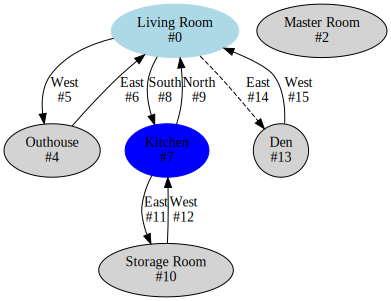

dbtools is a library and set of utilities for examining, transforming, and editing PennMUSH database files. Unless otherwise specified, all programs can work with either uncompressed databases, or ones compressed with gzip (.gz) or bzip2 (.bz2). Old compress (.Z) files are a different format that the compression library used can’t handle.
Currently, any database generated by PennMUSH 1.7.6 and up should be readable, as well as many older formats. Further testing and compability work is ongoing.
It does not currently support mail or chat databases.
dbtools programs are written in C++, not C like Penn itself. They depend on OpenSSL, and the boost.iostreams and boost.program-options libraries as well as some header-only boost libraries. The latter can be installed on Ubuntu like systems with sudo apt install libboost-dev libboost-iostreams-dev libboost-program-options-dev, and arch via sudo pacman -S boost. cmake is used for configuration and creating Makefiles.
To build:
% cd dbtools
% cmake -DCMAKE_BUILD_TYPE=Release .
% make -j4Install a git client if not already present.
Install vcpkg if not already present, following the instuctions on that page.
Install the following packages if needed (Via .\vcpkg install): openssl boost-iostreams boost-program-options boost-algorithm boost-container (This might take a while)
vcpkg supports both 32-bit and 64-bit targets. You might need to explicitly request the one you want to use (64 bit is suggested), by .\vcpkg install openssl:x64-windows or .\vcpkg install openssl:x86-windows.
Open VS 2017.
File->Open->Folder and select the dbtools directory.
Right click on CMakeLists.txt in the Solution Explorer and select Change CMake Settings. This will bring up a file called CMakeSettings.json. It has an assortment of build targets (Like x64-Release), any of which you plan on using needs to be updated to let CMake know about the vcpkg installation. Instructions and an example are here.
Select CMake->Build All.
Read a database in any supported format, and write out the database in the current format.
Database is compressed with gzip.
Database is compressed with bzip2.
Modify the database file in-place. If not given, the database is printed to standard output.
If a filename is not given on the command line, standard input is used.
To upgrade an old, uncompressed database in place: dbtools/dbupgrade -i game/data/outdb
To upgrade an old, compressed database: uncompress -c game/data/outdb.Z | dbtools/dbupgrade | gzip -c > game/data/indb.gz
A smart version of grep: Given a regular expression, searches a database and displays the locations it matches. Potentially looks in object names, lock keys and attribute contents.
Database is compressed with gzip.
Database is compressed with bzip2.
The regular expression is matched case-insensitively.
Search object names.
Search locks.
Search attribute bodies.
Search all fields. If none of -n, -l, -t are given this is the default.
One mandatory command line argument is needed: The pattern to search for. If a database file name is not also given, standard input is used.
To search for a dbref: ./dbtools/grepdb -z "#1622\\b" game/data/outdb.gz (The \b is a word boundry assertation that stops things like “#16222” from matching.)
To search for a phrase, ignoring case: ./dbtools/grepdb -i "White Rabbit" < game/data/outdb
A replacement for utils/pwutil.pl, this program lets you alter passwords of players. Handy if, for example, you forgot God’s password.
Specifies a particular player dbref (Without the #), or -a for all players. One of these two options must be given.
The password to use. The default is hunter2.
Instead of setting a password, erase it. -ac clears all players passwords.
The database file is gzipped.
Database is compressed with bzip2.
Modify the database file in place. If not given, the modified db is printed to standard output.
If a filename is not given on the command line, standard input is used.
To reset #1’s password to foobar: dbtools/pwutil -iz -d 1 -p foobar game/data/outdb.gz
To erase every player’s passwords in a new database: dbtools/pwutil -acz game/data/outdb.gz > newdb.gz
Creates a graph of the database’s rooms and exits in the dot language used by graphviz. Graphviz tools can then be used to visualize the grid, and manipulate the graph first if desired.
Exits without locks are represented by solid lines, exits with locks by dashed.
If a room or exit has a COLOR attribute, its value is used as the color for that part of the graph. (TODO: Parse MONIKER attributes?)
If an exit has a DISTANCE attribute that is an integer, its value is used as the length of that edge (Used by some graphviz utilities like dijsktra).
Indicates the database is gzipped.
Database is compressed with bzip2.
If a filename is not given on the command line, standard input is used. The resulting graph is always printed to standard output.
To create a map of your world: dbtools/db2dot -z game/data/outdb.gz | dot -Tsvg > world.svg. It might look like .
To limit the output to only rooms reachable from #0: dbtools/db2dot -z game/data/outdb.gz | ccomps -X room0 > grid.dot